Technical art highlights
- Shipped a production Photoshop extension on the UXP API
- Routed 6+ AI providers and ComfyUI workflows behind one interface
- Built non-destructive layer output and local depth-mask tooling
- Co-designed versioning with silent hotfixes for a large team
01Overview
A Photoshop extension that turns the application into a unified AI-assisted concept environment: generation, instruction-based editing, inpainting, canvas expansion, segmentation, upscaling and image analysis, all returning as ordinary editable layers.
Before it existed, artists bounced between Photoshop, web AI services and internal utilities, so nobody used the same model for the same job and every result had to be re-imported by hand. The extension standardizes AI use across the team and keeps the output non-destructive.
Built March – July 2026 at Tencent Games · TiMi J3 Studio · Delta Force. Confidential information has been excluded.
02My contributions
Plugin development
Built the panel against the Photoshop UXP API so every result arrives positioned, scaled and named as a new layer.
Task routing
Split traffic between an internal corporate AI platform for general tasks and a studio-managed ComfyUI service for specialized ones such as background removal.
Local Photoshop processing
Kept masks, canvas prep, layer placement, compression and depth-based selection inside Photoshop wherever a round trip wasn’t needed.
Model research & selection
Evaluated models and ComfyUI workflows per feature, then wrapped them behind one consistent set of controls.
Deployment
Co-designed a centralized version system with silent JS hotfixes and mandatory installer updates for a large art team.
03Technical pipeline

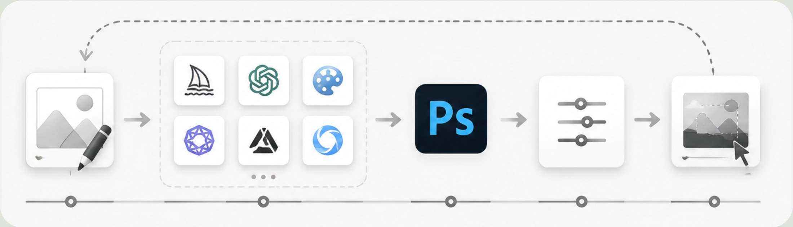
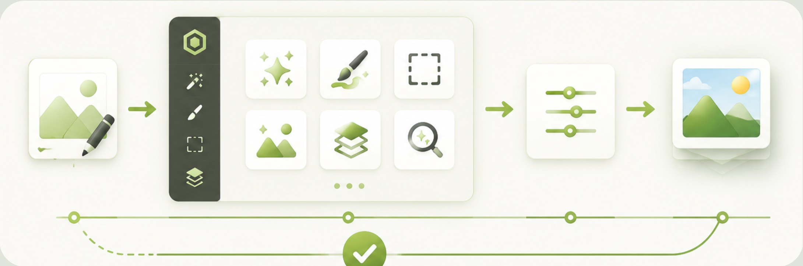
The plugin doesn’t run models locally. It packages prompts, source images, masks, references and settings into standardized requests, routes them, then decodes the response, writes it to a temp file and imports it via the UXP API – always as a new layer, so artists keep working non-destructively.
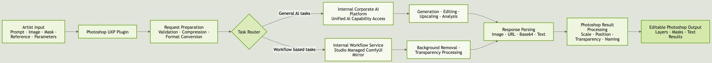
- Unified model routing: multiple providers and API formats sit behind one interface, so models can be swapped without changing the artist workflow.
- Provider-specific processing: the plugin absorbs each provider’s request structure, output format, size limit and mask convention.
- Non-destructive output: results are always new layers, never overwrites.
- Local processing: masks, canvas prep, layer placement, compression and depth-based selection run inside Photoshop wherever possible.
04Core features
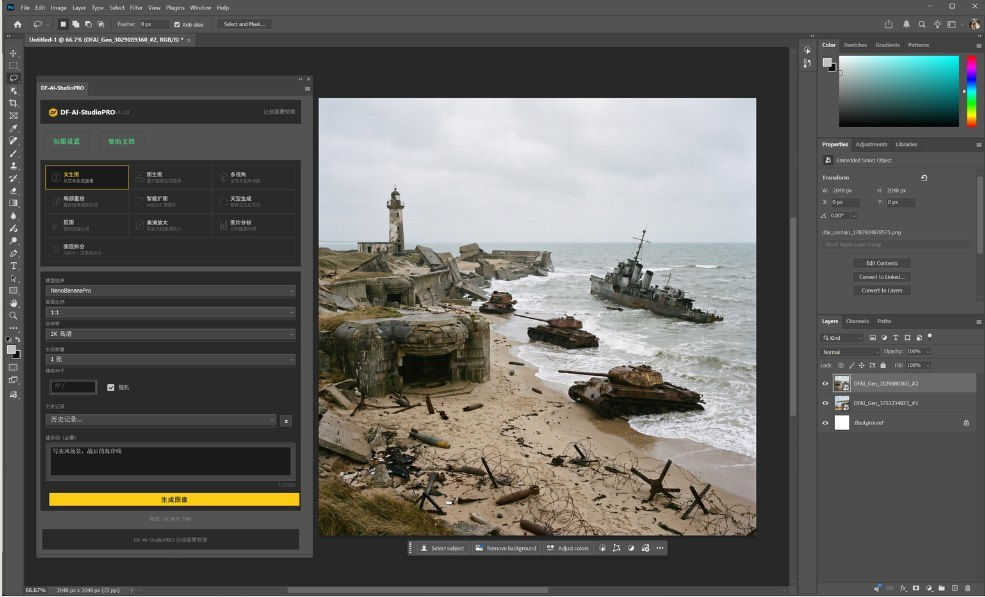
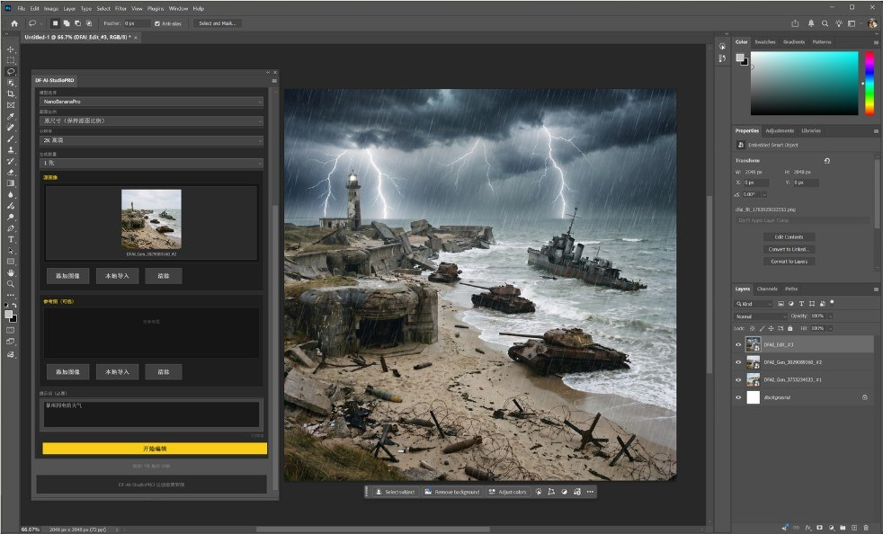
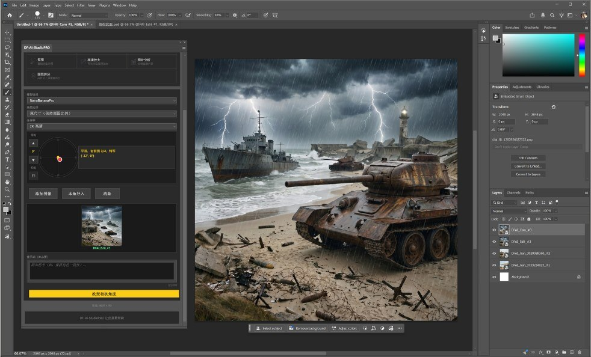
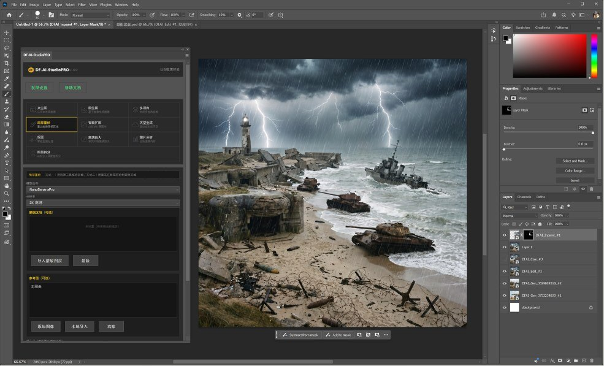
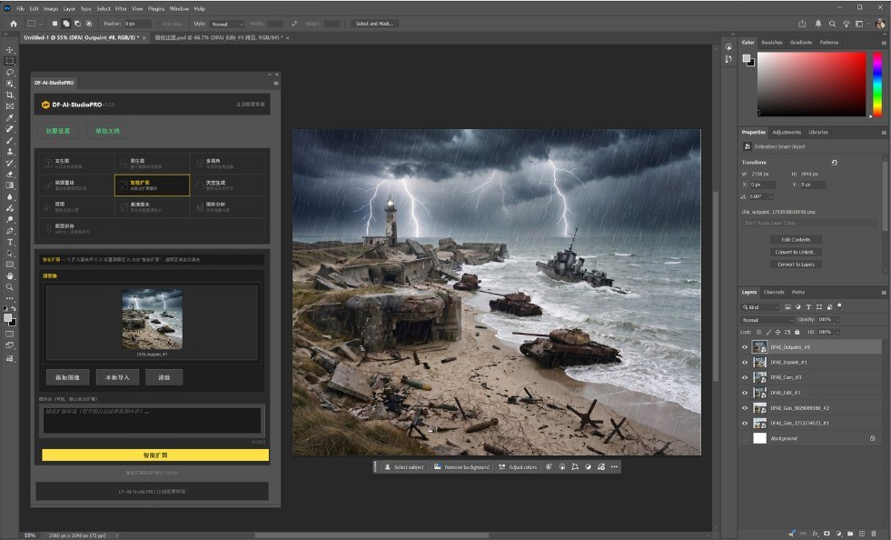
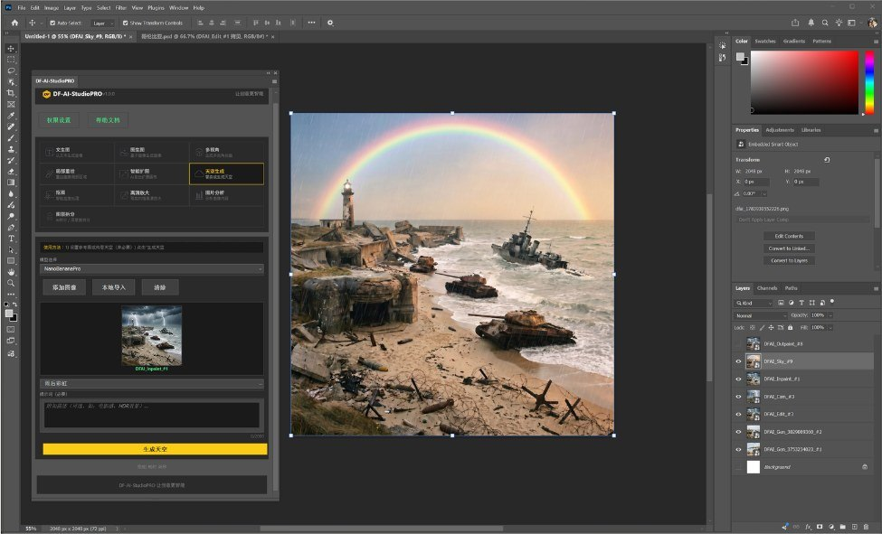
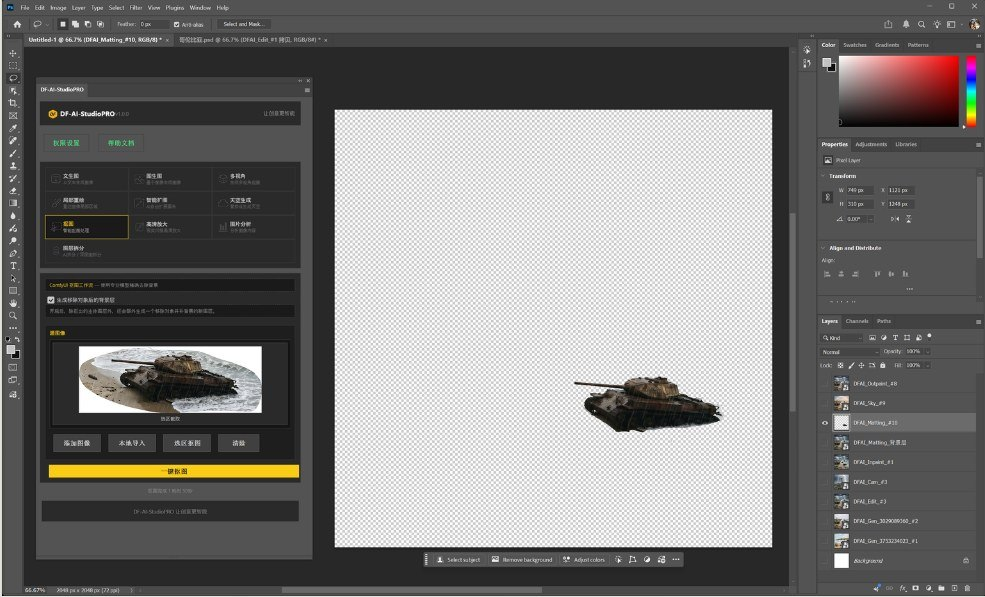
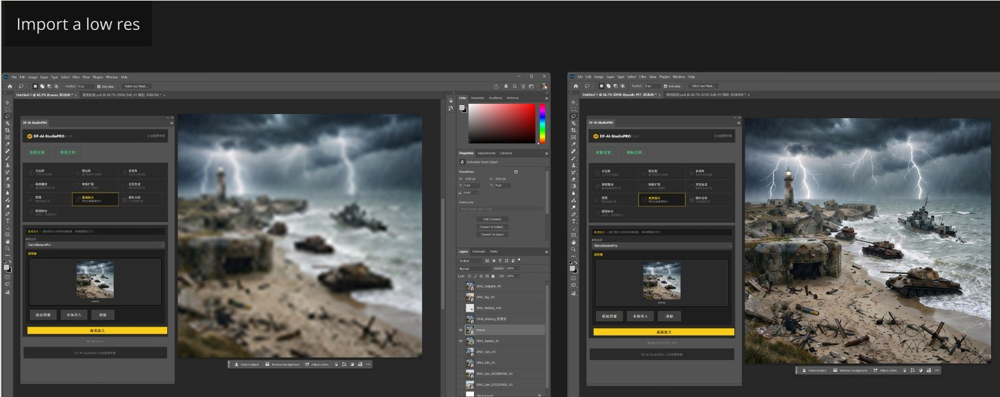
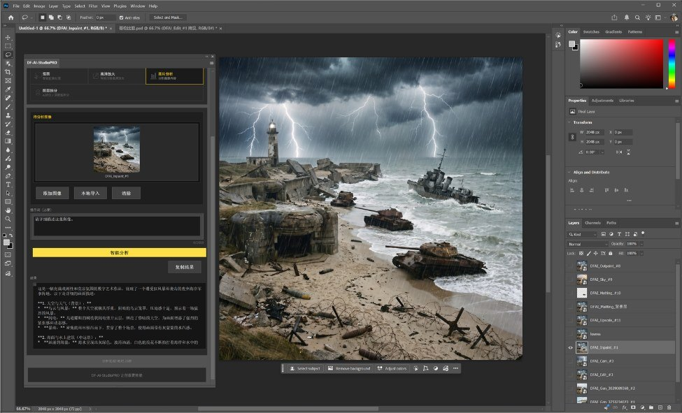
Layer decomposition
Semantic decomposition splits an image into layers. Artists describe each layer, or let the model propose object descriptions before extraction.
Depth-based decomposition generates a grayscale depth map, then converts selected depth ranges into Photoshop layer masks locally via color-range selection, so artists can fine-tune thresholds themselves instead of re-running a model.
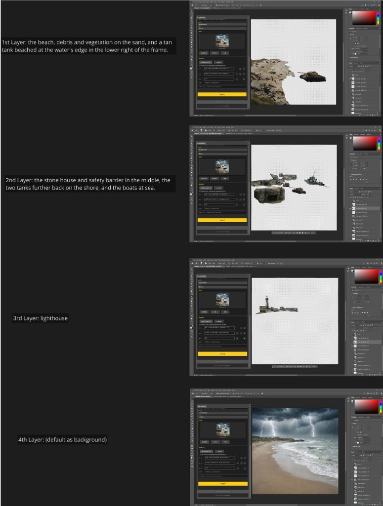
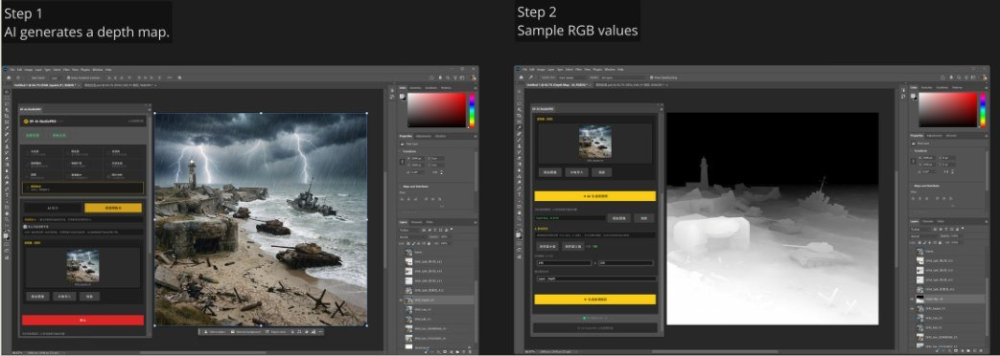
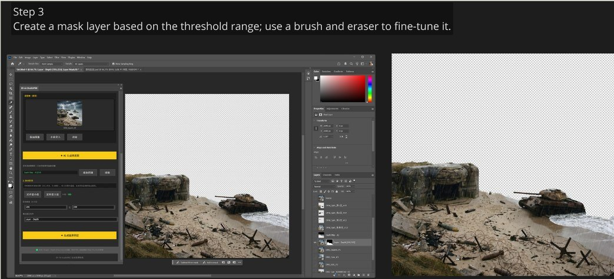
05Deployment & update management
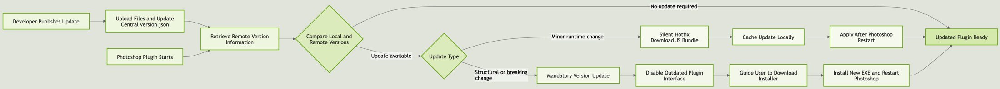
This turned distribution from a social problem (“did you get the new link?”) into a system guarantee: small fixes reach everyone without interrupting their work, and incompatible builds can’t keep calling the backend.
06Challenges & solutions
AI output landed outside the artist’s file
Generating in a browser meant downloading, re-importing, scaling and positioning by hand, and losing the original in the process.
Everything returns as a layer
Results are decoded and imported through UXP already positioned, scaled and named, on top of the existing document. Nothing is ever overwritten.
Many providers, many conventions
Each provider had a different request structure, output format, size restriction and mask convention.
One router, provider-specific adapters
General tasks go to the internal AI platform, specialized ones to a ComfyUI workflow service, and the plugin absorbs the differences so the artist sees one interface.
Not every step needs a model
Round-tripping simple mask work to a server was slow and gave artists no control over the threshold.
Keep local work local
Depth thresholds, color-range selection, canvas prep and compression run inside Photoshop, so artists can refine a mask with a brush instead of re-prompting.
Getting every artist on the right version
Updates shared through group chats meant nobody could confirm who had the latest build, so fixed bugs kept getting re-reported and versions drifted.
Two-level update strategy
On launch the plugin checks a central version config. Silent hotfixes download, syntax-validate and cache a new JS bundle for the next restart. Mandatory updates replace the UI with an update page when the installed version is below the minimum supported one.
07What I learned
- A TA tool succeeds when artists don’t notice the plumbing. Most of the work was hiding model choice, formats and failure cases behind one familiar panel.
- Non-destructive output is what made artists adopt it. A tool that can lose your work doesn’t get used twice.
- Deployment is part of the tool. Versioning and hotfixes mattered as much to adoption as any feature did.